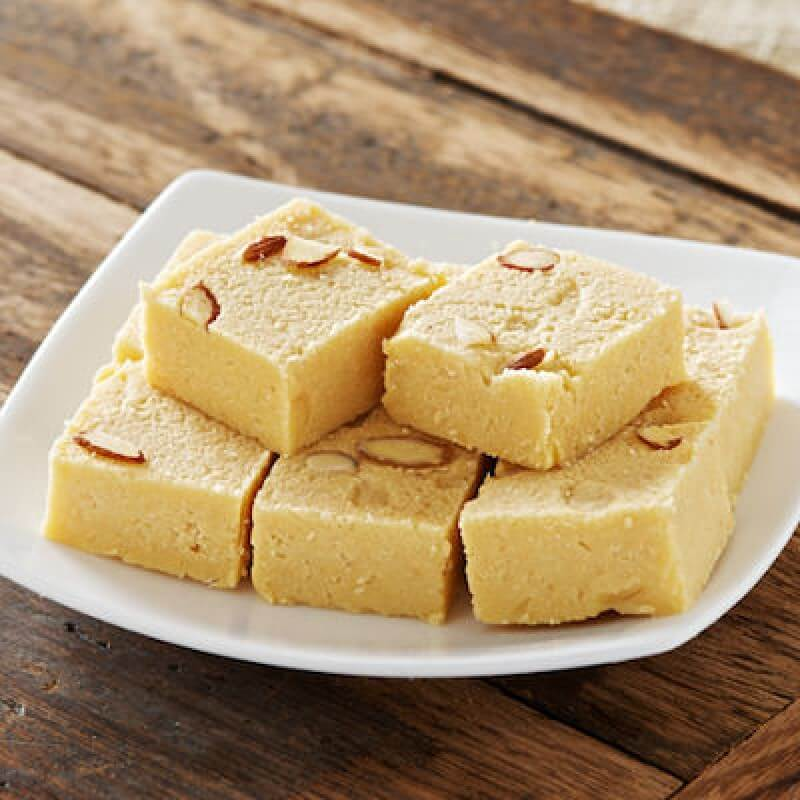

Silver vark (edible silver foil) for garnishing (optional)
A few saffron strands for garnishing (optional)
Process:
Prepare the Almonds:
Soak the almonds in hot water for about 1-2 hours. This will help in peeling off the skin easily.
After soaking, drain the water and peel the skin off the almonds.
Dry the peeled almonds thoroughly using a clean kitchen towel.
Grind the Almonds:
Once the almonds are dry, grind them into a fine powder using a blender or food processor.
Make sure not to over-grind, as it might release oil from the almonds and turn into almond butter.
Prepare the Sugar Syrup:
In a heavy-bottomed pan, add the sugar and water.
Heat the mixture on medium flame, stirring continuously until the sugar dissolves completely.
Continue to cook until the syrup reaches a one-string consistency (when a drop of syrup between your thumb and finger forms a single thread).
Cook the Almond Mixture:
Reduce the heat to low and add the powdered almonds to the sugar syrup.
Stir continuously to avoid lumps and ensure the mixture is smooth.
Add the cardamom powder (if using) and ghee. Continue to cook, stirring constantly, until the mixture starts to leave the sides of the pan and forms a dough-like consistency.
Set the Barfi:
Grease a flat plate or tray with ghee.
Pour the almond mixture onto the greased plate and spread it evenly using a spatula or the back of a spoon.
Allow it to cool slightly before marking it into desired shapes (squares or diamonds) using a knife.
Garnish:
Once the Barfi is set and slightly cooled, you can place silver vark on top for an authentic touch.
Garnish with a few saffron strands if desired.
Serve:
Once completely cooled, cut along the marked lines and gently lift the pieces from the plate.
Store the Badam Barfi in an airtight container. It can be kept at room temperature for a few days or refrigerated for longer shelf life.

Kaju Katli Recipe
Ingredients:
1 cup cashews (kaju)
1/2 cup sugar
1/4 cup water
1/4 teaspoon cardamom powder (optional)
1 tablespoon ghee (clarified butter)
Silver vark (edible silver foil) for garnishing (optional)
A few saffron strands for garnishing (optional)
Process:
Prepare the Cashews:
Ensure the cashews are dry and at room temperature. If they are cold or moist, spread them on a towel for a few hours to dry out completely.
Grind the cashews into a fine powder using a blender or food processor.
Pulse in short bursts to avoid the cashews turning into cashew butter. Sieve the powder to ensure it's smooth and fine.
Prepare the Sugar Syrup:
Reduce the heat to low and add the cashew powder to the sugar syrup.
Stir continuously to avoid lumps and ensure the mixture is smooth.
Add the cardamom powder (if using) and ghee. Continue to cook, stirring constantly, until the mixture starts to leave the sides of the pan and forms a dough-like consistency. This usually takes about 5-7 minutes.
Cook the Cashew Mixture:
Reduce the heat to low and add the powdered almonds to the sugar syrup.
Stir continuously to avoid lumps and ensure the mixture is smooth.
Add the cardamom powder (if using) and ghee. Continue to cook, stirring constantly, until the mixture starts to leave the sides of the pan and forms a dough-like consistency.
Knead the Dough:
Transfer the mixture onto a greased plate or a clean surface.
Let it cool slightly until it's safe to handle but still warm.
Grease your hands with a little ghee and knead the mixture to make a smooth dough.
Roll and Set the Katli:
Place the dough between two sheets of parchment paper or plastic wrap.
Roll the dough evenly to a thickness of about 1/4 inch using a rolling pin.
If desired, apply silver vark on top for an authentic touch.
Cut and Garnish:
Once the rolled dough is set and slightly cooled, cut it into diamond shapes using a sharp knife.
Garnish with a few saffron strands if desired.
Serve:
Gently lift the pieces from the plate and store them in an airtight container.
Kaju Katli can be kept at room temperature for a few days or refrigerated for longer shelf life.